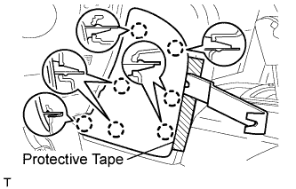
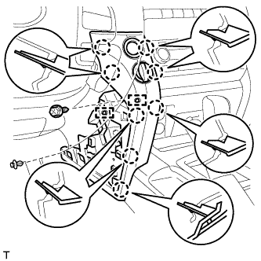
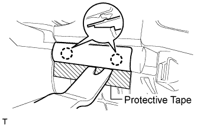
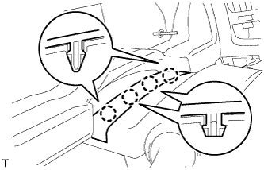
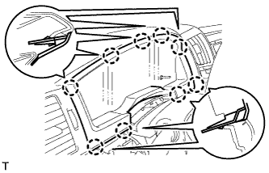
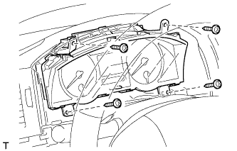
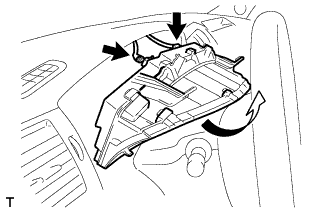

COMBINATION METER (w/o Multi-information Display) > REMOVAL |
| 1. REMOVE DISABLE AUTO TILT AWAY FUNCTION |
for Power Tilt and Power Telescopic Steering Column:
Disable the Autoaway/Return function by changing the customize parameter (Click here).
Turn the engine switch on (IG). Operate the tilt and telescopic switch to fully extend and lower the steering column assembly.
Turn the engine switch off .
| 2. DISCONNECT CABLE FROM NEGATIVE BATTERY TERMINAL |
| 3. REMOVE NO. 1 INSTRUMENT CLUSTER FINISH PANEL GARNISH |
 |
Place protective tape as shown in the illustration.
Using a moulding remover, detach the 3 claws and remove the panel garnish.
| 4. REMOVE NO. 2 INSTRUMENT PANEL FINISH PANEL CUSHION |
 |
Place protective tape as shown in the illustration.
Using a moulding remover, detach the 7 claws and remove the panel cushion.
| 5. REMOVE LOWER INSTRUMENT PANEL PAD SUB-ASSEMBLY LH |
 |
Remove the clip.
Remove the screw.
Detach the 8 claws.
Remove the panel pad and disconnect the connectors and 2 clamps.
| 6. REMOVE NO. 2 INSTRUMENT CLUSTER FINISH PANEL GARNISH |
 |
Place protective tape as shown in the illustration.
Using a moulding remover, detach the 2 claws and remove the panel garnish.
| 7. REMOVE INSTRUMENT CLUSTER FINISH PANEL SUB-ASSEMBLY |
for Manual Tilt and Manual Telescopic Steering Column:
Operate the tilt and telescopic lever to fully extend and lower the steering column assembly.
 |
Detach the 4 claws.
 |
Detach the 9 claws and remove the finish panel.
| 8. REMOVE COMBINATION METER ASSEMBLY |
 |
Remove the 4 screws.
 |
Disconnect the connectors, and remove the combination meter by pulling it up in the direction of the arrow in the illustration.